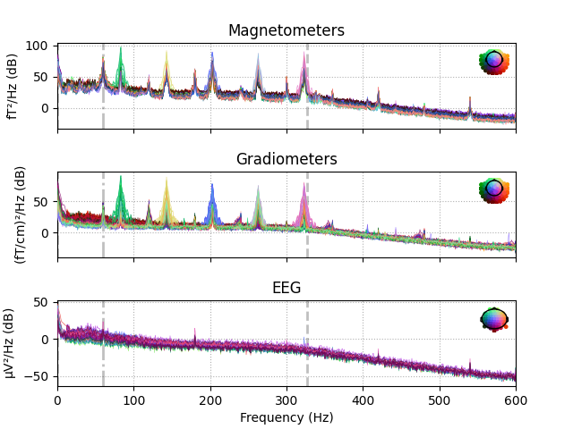
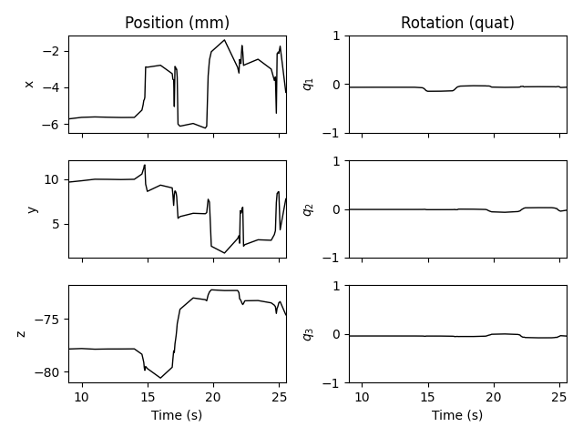
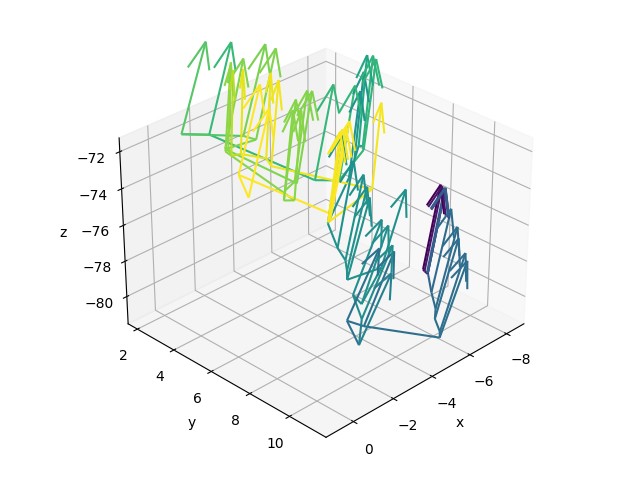

Note
Click here to download the full example code
Extracting and visualizing subject head movement¶
Continuous head movement can be encoded during MEG recordings by use of HPI coils that continuously emit sinusoidal signals. These signals can then be extracted from the recording and used to estimate head position as a function of time. Here we show an example of how to do this, and how to visualize the result.
HPI frequencies¶
First let’s load a short bit of raw data where the subject intentionally moved their head during the recording. Its power spectral density shows five peaks (most clearly visible in the gradiometers) corresponding to the HPI coil frequencies, plus other peaks related to power line interference (60 Hz and harmonics).
# Authors: Eric Larson <larson.eric.d@gmail.com>
#
# License: BSD (3-clause)
from os import path as op
import mne
print(__doc__)
data_path = op.join(mne.datasets.testing.data_path(verbose=True), 'SSS')
fname_raw = op.join(data_path, 'test_move_anon_raw.fif')
raw = mne.io.read_raw_fif(fname_raw, allow_maxshield='yes').load_data()
raw.plot_psd()

Out:
Opening raw data file /home/circleci/mne_data/MNE-testing-data/SSS/test_move_anon_raw.fif...
Read a total of 12 projection items:
mag.fif : PCA-v1 (1 x 306) idle
mag.fif : PCA-v2 (1 x 306) idle
mag.fif : PCA-v3 (1 x 306) idle
mag.fif : PCA-v4 (1 x 306) idle
mag.fif : PCA-v5 (1 x 306) idle
mag.fif : PCA-v6 (1 x 306) idle
mag.fif : PCA-v7 (1 x 306) idle
grad.fif : PCA-v1 (1 x 306) idle
grad.fif : PCA-v2 (1 x 306) idle
grad.fif : PCA-v3 (1 x 306) idle
grad.fif : PCA-v4 (1 x 306) idle
Average EEG reference (1 x 60) idle
Range : 10800 ... 31199 = 9.000 ... 25.999 secs
Ready.
Reading 0 ... 20399 = 0.000 ... 16.999 secs...
Effective window size : 1.707 (s)
Effective window size : 1.707 (s)
Effective window size : 1.707 (s)
Estimating continuous head position¶
First, let’s extract the HPI coil amplitudes as a function of time:
Out:
Using 5 HPI coils: 83 143 203 263 323 Hz
Line interference frequencies: 60 120 180 240 300 360 Hz
Using time window: 83.3 ms
Fitting 5 HPI coil locations at up to 1696 time points (17.0 sec duration)
0%| | cHPI amplitudes : 0/1696 [00:00<?, ?it/s]
0%| | cHPI amplitudes : 1/1696 [00:03<1:42:31, 3.63s/it]
1%|1 | cHPI amplitudes : 18/1696 [00:03<05:23, 5.18it/s]
1%|1 | cHPI amplitudes : 23/1696 [00:03<04:11, 6.66it/s]
2%|1 | cHPI amplitudes : 27/1696 [00:03<03:31, 7.89it/s]
2%|2 | cHPI amplitudes : 42/1696 [00:03<02:11, 12.58it/s]
3%|2 | cHPI amplitudes : 48/1696 [00:03<01:53, 14.54it/s]
3%|3 | cHPI amplitudes : 55/1696 [00:03<01:36, 16.95it/s]
3%|3 | cHPI amplitudes : 59/1696 [00:03<01:30, 18.03it/s]
4%|3 | cHPI amplitudes : 65/1696 [00:03<01:20, 20.20it/s]
4%|4 | cHPI amplitudes : 73/1696 [00:03<01:09, 23.26it/s]
5%|4 | cHPI amplitudes : 78/1696 [00:03<01:05, 24.74it/s]
5%|4 | cHPI amplitudes : 83/1696 [00:03<01:00, 26.70it/s]
5%|5 | cHPI amplitudes : 90/1696 [00:03<00:54, 29.64it/s]
6%|5 | cHPI amplitudes : 97/1696 [00:04<00:50, 31.84it/s]
6%|6 | cHPI amplitudes : 104/1696 [00:04<00:45, 34.92it/s]
6%|6 | cHPI amplitudes : 109/1696 [00:04<00:42, 37.11it/s]
7%|6 | cHPI amplitudes : 117/1696 [00:04<00:39, 39.77it/s]
7%|7 | cHPI amplitudes : 121/1696 [00:04<00:37, 41.52it/s]
8%|7 | cHPI amplitudes : 128/1696 [00:04<00:34, 44.95it/s]
8%|7 | cHPI amplitudes : 131/1696 [00:04<00:34, 45.26it/s]
8%|7 | cHPI amplitudes : 134/1696 [00:04<00:33, 46.58it/s]
8%|8 | cHPI amplitudes : 138/1696 [00:04<00:32, 48.45it/s]
9%|8 | cHPI amplitudes : 146/1696 [00:04<00:29, 51.72it/s]
9%|8 | cHPI amplitudes : 148/1696 [00:04<00:29, 52.38it/s]
9%|9 | cHPI amplitudes : 154/1696 [00:04<00:27, 55.82it/s]
10%|9 | cHPI amplitudes : 164/1696 [00:04<00:24, 62.12it/s]
10%|9 | cHPI amplitudes : 166/1696 [00:04<00:24, 61.21it/s]
10%|# | cHPI amplitudes : 171/1696 [00:04<00:23, 63.91it/s]
11%|# | cHPI amplitudes : 180/1696 [00:04<00:21, 69.90it/s]
11%|# | cHPI amplitudes : 186/1696 [00:04<00:21, 70.77it/s]
11%|#1 | cHPI amplitudes : 194/1696 [00:04<00:19, 76.07it/s]
12%|#1 | cHPI amplitudes : 201/1696 [00:04<00:18, 80.72it/s]
12%|#2 | cHPI amplitudes : 206/1696 [00:04<00:18, 80.77it/s]
13%|#2 | cHPI amplitudes : 213/1696 [00:04<00:17, 85.51it/s]
13%|#2 | cHPI amplitudes : 220/1696 [00:04<00:16, 90.40it/s]
13%|#3 | cHPI amplitudes : 227/1696 [00:04<00:16, 90.95it/s]
14%|#3 | cHPI amplitudes : 234/1696 [00:04<00:15, 95.73it/s]
14%|#4 | cHPI amplitudes : 241/1696 [00:04<00:14, 100.75it/s]
15%|#4 | cHPI amplitudes : 247/1696 [00:04<00:14, 100.28it/s]
15%|#4 | cHPI amplitudes : 253/1696 [00:04<00:13, 104.35it/s]
15%|#5 | cHPI amplitudes : 260/1696 [00:04<00:13, 109.59it/s]
16%|#5 | cHPI amplitudes : 265/1696 [00:04<00:13, 107.36it/s]
16%|#6 | cHPI amplitudes : 272/1696 [00:04<00:12, 112.50it/s]
17%|#6 | cHPI amplitudes : 280/1696 [00:04<00:11, 118.87it/s]
17%|#6 | cHPI amplitudes : 285/1696 [00:05<00:12, 116.94it/s]
17%|#7 | cHPI amplitudes : 290/1696 [00:05<00:11, 120.13it/s]
18%|#7 | cHPI amplitudes : 297/1696 [00:05<00:11, 125.46it/s]
18%|#7 | cHPI amplitudes : 303/1696 [00:05<00:11, 121.88it/s]
18%|#7 | cHPI amplitudes : 305/1696 [00:05<00:11, 121.74it/s]
18%|#8 | cHPI amplitudes : 310/1696 [00:05<00:11, 125.03it/s]
19%|#8 | cHPI amplitudes : 320/1696 [00:05<00:10, 128.76it/s]
19%|#9 | cHPI amplitudes : 326/1696 [00:05<00:10, 133.21it/s]
20%|#9 | cHPI amplitudes : 332/1696 [00:05<00:09, 137.49it/s]
20%|#9 | cHPI amplitudes : 339/1696 [00:05<00:10, 135.52it/s]
20%|## | cHPI amplitudes : 341/1696 [00:05<00:10, 135.15it/s]
20%|## | cHPI amplitudes : 347/1696 [00:05<00:09, 139.70it/s]
21%|## | cHPI amplitudes : 355/1696 [00:05<00:09, 146.82it/s]
21%|##1 | cHPI amplitudes : 357/1696 [00:05<00:09, 139.64it/s]
21%|##1 | cHPI amplitudes : 361/1696 [00:05<00:09, 141.70it/s]
22%|##1 | cHPI amplitudes : 368/1696 [00:05<00:09, 147.53it/s]
22%|##2 | cHPI amplitudes : 376/1696 [00:05<00:09, 144.11it/s]
23%|##2 | cHPI amplitudes : 382/1696 [00:05<00:08, 148.52it/s]
23%|##2 | cHPI amplitudes : 385/1696 [00:05<00:08, 149.14it/s]
23%|##3 | cHPI amplitudes : 392/1696 [00:05<00:08, 144.96it/s]
23%|##3 | cHPI amplitudes : 397/1696 [00:05<00:08, 148.26it/s]
24%|##3 | cHPI amplitudes : 405/1696 [00:05<00:08, 155.73it/s]
24%|##4 | cHPI amplitudes : 408/1696 [00:05<00:08, 148.55it/s]
24%|##4 | cHPI amplitudes : 414/1696 [00:05<00:08, 153.11it/s]
25%|##4 | cHPI amplitudes : 420/1696 [00:05<00:08, 157.70it/s]
25%|##5 | cHPI amplitudes : 428/1696 [00:05<00:08, 155.27it/s]
25%|##5 | cHPI amplitudes : 431/1696 [00:05<00:08, 155.60it/s]
26%|##5 | cHPI amplitudes : 437/1696 [00:05<00:07, 159.65it/s]
26%|##6 | cHPI amplitudes : 443/1696 [00:05<00:08, 152.23it/s]
26%|##6 | cHPI amplitudes : 447/1696 [00:05<00:08, 154.03it/s]
27%|##6 | cHPI amplitudes : 455/1696 [00:05<00:07, 161.67it/s]
27%|##7 | cHPI amplitudes : 460/1696 [00:06<00:07, 156.65it/s]
27%|##7 | cHPI amplitudes : 465/1696 [00:06<00:07, 160.07it/s]
28%|##7 | cHPI amplitudes : 471/1696 [00:06<00:07, 164.99it/s]
28%|##8 | cHPI amplitudes : 479/1696 [00:06<00:07, 160.63it/s]
28%|##8 | cHPI amplitudes : 483/1696 [00:06<00:07, 162.45it/s]
29%|##8 | cHPI amplitudes : 489/1696 [00:06<00:07, 167.36it/s]
29%|##9 | cHPI amplitudes : 496/1696 [00:06<00:07, 160.76it/s]
30%|##9 | cHPI amplitudes : 502/1696 [00:06<00:07, 165.27it/s]
30%|### | cHPI amplitudes : 509/1696 [00:06<00:06, 171.37it/s]
30%|### | cHPI amplitudes : 514/1696 [00:06<00:07, 160.06it/s]
31%|### | cHPI amplitudes : 521/1696 [00:06<00:07, 164.09it/s]
31%|###1 | cHPI amplitudes : 528/1696 [00:06<00:07, 157.20it/s]
31%|###1 | cHPI amplitudes : 530/1696 [00:06<00:07, 155.65it/s]
32%|###1 | cHPI amplitudes : 536/1696 [00:06<00:07, 160.20it/s]
32%|###2 | cHPI amplitudes : 543/1696 [00:06<00:07, 157.01it/s]
32%|###2 | cHPI amplitudes : 548/1696 [00:06<00:07, 160.41it/s]
33%|###2 | cHPI amplitudes : 555/1696 [00:06<00:06, 166.53it/s]
33%|###3 | cHPI amplitudes : 561/1696 [00:06<00:07, 161.18it/s]
33%|###3 | cHPI amplitudes : 566/1696 [00:06<00:06, 164.54it/s]
34%|###3 | cHPI amplitudes : 572/1696 [00:06<00:06, 169.36it/s]
34%|###4 | cHPI amplitudes : 580/1696 [00:06<00:06, 164.75it/s]
34%|###4 | cHPI amplitudes : 584/1696 [00:06<00:06, 166.55it/s]
35%|###4 | cHPI amplitudes : 591/1696 [00:06<00:06, 172.58it/s]
35%|###5 | cHPI amplitudes : 599/1696 [00:06<00:06, 167.76it/s]
36%|###5 | cHPI amplitudes : 605/1696 [00:06<00:06, 171.66it/s]
36%|###6 | cHPI amplitudes : 612/1696 [00:06<00:06, 177.41it/s]
37%|###6 | cHPI amplitudes : 620/1696 [00:06<00:06, 170.42it/s]
37%|###6 | cHPI amplitudes : 623/1696 [00:06<00:06, 170.32it/s]
37%|###7 | cHPI amplitudes : 631/1696 [00:06<00:05, 177.62it/s]
38%|###7 | cHPI amplitudes : 640/1696 [00:07<00:06, 174.61it/s]
38%|###8 | cHPI amplitudes : 646/1696 [00:07<00:05, 178.76it/s]
39%|###8 | cHPI amplitudes : 655/1696 [00:07<00:05, 187.68it/s]
39%|###9 | cHPI amplitudes : 663/1696 [00:07<00:05, 184.05it/s]
39%|###9 | cHPI amplitudes : 669/1696 [00:07<00:05, 187.92it/s]
40%|###9 | cHPI amplitudes : 675/1696 [00:07<00:05, 192.15it/s]
40%|#### | cHPI amplitudes : 683/1696 [00:07<00:05, 185.75it/s]
41%|#### | cHPI amplitudes : 688/1696 [00:07<00:05, 188.59it/s]
41%|#### | cHPI amplitudes : 695/1696 [00:07<00:05, 194.20it/s]
41%|####1 | cHPI amplitudes : 703/1696 [00:07<00:05, 187.41it/s]
42%|####1 | cHPI amplitudes : 708/1696 [00:07<00:05, 190.09it/s]
42%|####2 | cHPI amplitudes : 714/1696 [00:07<00:05, 194.55it/s]
43%|####2 | cHPI amplitudes : 722/1696 [00:07<00:05, 188.19it/s]
43%|####2 | cHPI amplitudes : 726/1696 [00:07<00:05, 188.98it/s]
43%|####3 | cHPI amplitudes : 731/1696 [00:07<00:05, 191.83it/s]
44%|####3 | cHPI amplitudes : 740/1696 [00:07<00:04, 200.83it/s]
44%|####3 | cHPI amplitudes : 741/1696 [00:07<00:05, 187.65it/s]
44%|####3 | cHPI amplitudes : 746/1696 [00:07<00:04, 190.74it/s]
44%|####4 | cHPI amplitudes : 752/1696 [00:07<00:04, 195.43it/s]
45%|####4 | cHPI amplitudes : 760/1696 [00:07<00:04, 187.75it/s]
45%|####4 | cHPI amplitudes : 762/1696 [00:07<00:05, 185.98it/s]
45%|####5 | cHPI amplitudes : 766/1696 [00:07<00:04, 186.96it/s]
46%|####5 | cHPI amplitudes : 775/1696 [00:07<00:04, 196.66it/s]
46%|####5 | cHPI amplitudes : 780/1696 [00:07<00:04, 186.96it/s]
46%|####6 | cHPI amplitudes : 785/1696 [00:07<00:04, 189.58it/s]
47%|####6 | cHPI amplitudes : 790/1696 [00:07<00:04, 192.61it/s]
47%|####7 | cHPI amplitudes : 799/1696 [00:07<00:04, 187.06it/s]
47%|####7 | cHPI amplitudes : 803/1696 [00:07<00:04, 187.36it/s]
48%|####7 | cHPI amplitudes : 806/1696 [00:07<00:04, 187.25it/s]
48%|####8 | cHPI amplitudes : 818/1696 [00:07<00:04, 183.98it/s]
48%|####8 | cHPI amplitudes : 821/1696 [00:07<00:04, 183.09it/s]
49%|####8 | cHPI amplitudes : 829/1696 [00:07<00:04, 190.92it/s]
49%|####9 | cHPI amplitudes : 833/1696 [00:08<00:04, 181.80it/s]
49%|####9 | cHPI amplitudes : 838/1696 [00:08<00:04, 184.92it/s]
50%|####9 | cHPI amplitudes : 841/1696 [00:08<00:04, 184.66it/s]
50%|##### | cHPI amplitudes : 848/1696 [00:08<00:04, 179.11it/s]
50%|##### | cHPI amplitudes : 851/1696 [00:08<00:04, 178.82it/s]
50%|##### | cHPI amplitudes : 855/1696 [00:08<00:04, 179.93it/s]
51%|##### | cHPI amplitudes : 864/1696 [00:08<00:04, 189.83it/s]
51%|#####1 | cHPI amplitudes : 865/1696 [00:08<00:04, 173.73it/s]
51%|#####1 | cHPI amplitudes : 868/1696 [00:08<00:04, 173.95it/s]
51%|#####1 | cHPI amplitudes : 872/1696 [00:08<00:04, 175.92it/s]
52%|#####2 | cHPI amplitudes : 885/1696 [00:08<00:04, 177.60it/s]
52%|#####2 | cHPI amplitudes : 890/1696 [00:08<00:04, 180.99it/s]
53%|#####2 | cHPI amplitudes : 894/1696 [00:08<00:04, 182.56it/s]
53%|#####3 | cHPI amplitudes : 905/1696 [00:08<00:04, 179.55it/s]
54%|#####3 | cHPI amplitudes : 910/1696 [00:08<00:04, 182.44it/s]
54%|#####4 | cHPI amplitudes : 917/1696 [00:08<00:04, 188.71it/s]
54%|#####4 | cHPI amplitudes : 921/1696 [00:08<00:04, 180.31it/s]
55%|#####4 | cHPI amplitudes : 927/1696 [00:08<00:04, 184.95it/s]
55%|#####5 | cHPI amplitudes : 933/1696 [00:08<00:04, 189.26it/s]
55%|#####5 | cHPI amplitudes : 940/1696 [00:08<00:04, 180.06it/s]
56%|#####5 | cHPI amplitudes : 945/1696 [00:08<00:04, 183.31it/s]
56%|#####6 | cHPI amplitudes : 951/1696 [00:08<00:03, 187.91it/s]
56%|#####6 | cHPI amplitudes : 958/1696 [00:08<00:04, 180.51it/s]
57%|#####6 | cHPI amplitudes : 961/1696 [00:08<00:04, 180.63it/s]
57%|#####7 | cHPI amplitudes : 967/1696 [00:08<00:03, 185.43it/s]
57%|#####7 | cHPI amplitudes : 975/1696 [00:08<00:03, 193.45it/s]
58%|#####7 | cHPI amplitudes : 976/1696 [00:08<00:04, 178.96it/s]
58%|#####7 | cHPI amplitudes : 980/1696 [00:08<00:03, 180.76it/s]
58%|#####8 | cHPI amplitudes : 986/1696 [00:08<00:03, 185.56it/s]
59%|#####8 | cHPI amplitudes : 995/1696 [00:08<00:03, 178.86it/s]
59%|#####8 | cHPI amplitudes : 998/1696 [00:08<00:03, 179.03it/s]
59%|#####9 | cHPI amplitudes : 1004/1696 [00:08<00:03, 183.68it/s]
60%|#####9 | cHPI amplitudes : 1012/1696 [00:09<00:03, 178.10it/s]
60%|#####9 | cHPI amplitudes : 1017/1696 [00:09<00:03, 180.71it/s]
60%|###### | cHPI amplitudes : 1023/1696 [00:09<00:03, 185.73it/s]
61%|###### | cHPI amplitudes : 1029/1696 [00:09<00:03, 175.48it/s]
61%|###### | cHPI amplitudes : 1034/1696 [00:09<00:03, 178.31it/s]
61%|######1 | cHPI amplitudes : 1040/1696 [00:09<00:03, 183.25it/s]
62%|######1 | cHPI amplitudes : 1048/1696 [00:09<00:03, 178.40it/s]
62%|######2 | cHPI amplitudes : 1053/1696 [00:09<00:03, 181.77it/s]
62%|######2 | cHPI amplitudes : 1059/1696 [00:09<00:03, 186.74it/s]
63%|######2 | cHPI amplitudes : 1068/1696 [00:09<00:03, 180.91it/s]
63%|######3 | cHPI amplitudes : 1073/1696 [00:09<00:03, 184.15it/s]
64%|######3 | cHPI amplitudes : 1079/1696 [00:09<00:03, 189.01it/s]
64%|######4 | cHPI amplitudes : 1086/1696 [00:09<00:03, 179.38it/s]
64%|######4 | cHPI amplitudes : 1090/1696 [00:09<00:03, 178.83it/s]
65%|######4 | cHPI amplitudes : 1098/1696 [00:09<00:03, 186.54it/s]
65%|######5 | cHPI amplitudes : 1106/1696 [00:09<00:03, 182.16it/s]
66%|######5 | cHPI amplitudes : 1112/1696 [00:09<00:03, 186.62it/s]
66%|######5 | cHPI amplitudes : 1119/1696 [00:09<00:03, 192.26it/s]
66%|######6 | cHPI amplitudes : 1127/1696 [00:09<00:03, 185.49it/s]
67%|######6 | cHPI amplitudes : 1133/1696 [00:09<00:02, 189.47it/s]
67%|######7 | cHPI amplitudes : 1140/1696 [00:09<00:02, 195.66it/s]
68%|######7 | cHPI amplitudes : 1145/1696 [00:09<00:02, 186.39it/s]
68%|######7 | cHPI amplitudes : 1149/1696 [00:09<00:02, 187.63it/s]
68%|######8 | cHPI amplitudes : 1154/1696 [00:09<00:02, 189.88it/s]
68%|######8 | cHPI amplitudes : 1160/1696 [00:09<00:02, 194.21it/s]
68%|######8 | cHPI amplitudes : 1161/1696 [00:09<00:03, 178.19it/s]
69%|######8 | cHPI amplitudes : 1166/1696 [00:09<00:02, 181.56it/s]
69%|######9 | cHPI amplitudes : 1173/1696 [00:09<00:02, 187.91it/s]
69%|######9 | cHPI amplitudes : 1178/1696 [00:09<00:02, 177.42it/s]
70%|######9 | cHPI amplitudes : 1184/1696 [00:09<00:02, 181.80it/s]
70%|####### | cHPI amplitudes : 1191/1696 [00:09<00:02, 188.28it/s]
71%|####### | cHPI amplitudes : 1197/1696 [00:10<00:02, 180.73it/s]
71%|####### | cHPI amplitudes : 1201/1696 [00:10<00:02, 181.99it/s]
71%|#######1 | cHPI amplitudes : 1207/1696 [00:10<00:02, 186.53it/s]
72%|#######1 | cHPI amplitudes : 1214/1696 [00:10<00:02, 178.92it/s]
72%|#######1 | cHPI amplitudes : 1218/1696 [00:10<00:02, 180.04it/s]
72%|#######2 | cHPI amplitudes : 1224/1696 [00:10<00:02, 184.87it/s]
73%|#######2 | cHPI amplitudes : 1233/1696 [00:10<00:02, 194.68it/s]
73%|#######2 | cHPI amplitudes : 1234/1696 [00:10<00:02, 181.03it/s]
73%|#######2 | cHPI amplitudes : 1238/1696 [00:10<00:02, 182.47it/s]
73%|#######3 | cHPI amplitudes : 1244/1696 [00:10<00:02, 187.32it/s]
74%|#######3 | cHPI amplitudes : 1252/1696 [00:10<00:02, 195.66it/s]
74%|#######3 | cHPI amplitudes : 1253/1696 [00:10<00:02, 178.70it/s]
74%|#######4 | cHPI amplitudes : 1258/1696 [00:10<00:02, 182.09it/s]
75%|#######4 | cHPI amplitudes : 1265/1696 [00:10<00:02, 188.70it/s]
75%|#######5 | cHPI amplitudes : 1272/1696 [00:10<00:02, 181.50it/s]
75%|#######5 | cHPI amplitudes : 1276/1696 [00:10<00:02, 183.03it/s]
76%|#######5 | cHPI amplitudes : 1282/1696 [00:10<00:02, 187.96it/s]
76%|#######6 | cHPI amplitudes : 1292/1696 [00:10<00:02, 184.01it/s]
76%|#######6 | cHPI amplitudes : 1297/1696 [00:10<00:02, 187.06it/s]
77%|#######6 | cHPI amplitudes : 1304/1696 [00:10<00:02, 193.04it/s]
77%|#######7 | cHPI amplitudes : 1310/1696 [00:10<00:02, 183.81it/s]
77%|#######7 | cHPI amplitudes : 1314/1696 [00:10<00:02, 185.25it/s]
78%|#######7 | cHPI amplitudes : 1319/1696 [00:10<00:02, 188.34it/s]
78%|#######8 | cHPI amplitudes : 1329/1696 [00:10<00:01, 200.10it/s]
78%|#######8 | cHPI amplitudes : 1330/1696 [00:10<00:01, 184.37it/s]
79%|#######8 | cHPI amplitudes : 1335/1696 [00:10<00:01, 187.57it/s]
79%|#######9 | cHPI amplitudes : 1342/1696 [00:10<00:01, 193.90it/s]
80%|#######9 | cHPI amplitudes : 1349/1696 [00:10<00:01, 185.54it/s]
80%|#######9 | cHPI amplitudes : 1354/1696 [00:10<00:01, 188.20it/s]
80%|######## | cHPI amplitudes : 1360/1696 [00:10<00:01, 192.99it/s]
81%|######## | cHPI amplitudes : 1368/1696 [00:10<00:01, 186.10it/s]
81%|######## | cHPI amplitudes : 1369/1696 [00:10<00:01, 181.78it/s]
81%|########1 | cHPI amplitudes : 1376/1696 [00:10<00:01, 187.99it/s]
82%|########1 | cHPI amplitudes : 1385/1696 [00:10<00:01, 197.99it/s]
82%|########1 | cHPI amplitudes : 1386/1696 [00:11<00:01, 184.71it/s]
82%|########2 | cHPI amplitudes : 1391/1696 [00:11<00:01, 187.92it/s]
82%|########2 | cHPI amplitudes : 1397/1696 [00:11<00:01, 192.95it/s]
83%|########2 | cHPI amplitudes : 1404/1696 [00:11<00:01, 183.26it/s]
83%|########3 | cHPI amplitudes : 1408/1696 [00:11<00:01, 184.86it/s]
83%|########3 | cHPI amplitudes : 1414/1696 [00:11<00:01, 189.99it/s]
84%|########3 | cHPI amplitudes : 1422/1696 [00:11<00:01, 198.41it/s]
84%|########3 | cHPI amplitudes : 1423/1696 [00:11<00:01, 178.94it/s]
84%|########4 | cHPI amplitudes : 1428/1696 [00:11<00:01, 182.19it/s]
85%|########4 | cHPI amplitudes : 1435/1696 [00:11<00:01, 189.14it/s]
85%|########5 | cHPI amplitudes : 1447/1696 [00:11<00:01, 188.50it/s]
85%|########5 | cHPI amplitudes : 1450/1696 [00:11<00:01, 186.52it/s]
86%|########6 | cHPI amplitudes : 1460/1696 [00:11<00:01, 196.98it/s]
86%|########6 | cHPI amplitudes : 1461/1696 [00:11<00:01, 180.99it/s]
86%|########6 | cHPI amplitudes : 1465/1696 [00:11<00:01, 181.50it/s]
87%|########6 | cHPI amplitudes : 1472/1696 [00:11<00:01, 188.27it/s]
87%|########7 | cHPI amplitudes : 1477/1696 [00:11<00:01, 177.21it/s]
87%|########7 | cHPI amplitudes : 1479/1696 [00:11<00:01, 174.73it/s]
88%|########7 | cHPI amplitudes : 1484/1696 [00:11<00:01, 178.26it/s]
88%|########7 | cHPI amplitudes : 1490/1696 [00:11<00:01, 168.87it/s]
88%|########8 | cHPI amplitudes : 1495/1696 [00:11<00:01, 171.61it/s]
89%|########8 | cHPI amplitudes : 1504/1696 [00:11<00:01, 181.62it/s]
89%|########8 | cHPI amplitudes : 1509/1696 [00:11<00:01, 174.70it/s]
89%|########9 | cHPI amplitudes : 1515/1696 [00:11<00:01, 179.53it/s]
90%|########9 | cHPI amplitudes : 1522/1696 [00:11<00:00, 185.75it/s]
90%|######### | cHPI amplitudes : 1529/1696 [00:11<00:00, 175.67it/s]
90%|######### | cHPI amplitudes : 1534/1696 [00:11<00:00, 178.43it/s]
91%|######### | cHPI amplitudes : 1539/1696 [00:11<00:00, 181.71it/s]
91%|#########1| cHPI amplitudes : 1547/1696 [00:11<00:00, 174.72it/s]
91%|#########1| cHPI amplitudes : 1550/1696 [00:11<00:00, 174.54it/s]
92%|#########1| cHPI amplitudes : 1558/1696 [00:11<00:00, 182.65it/s]
92%|#########2| cHPI amplitudes : 1563/1696 [00:12<00:00, 175.13it/s]
92%|#########2| cHPI amplitudes : 1567/1696 [00:12<00:00, 176.24it/s]
93%|#########2| cHPI amplitudes : 1575/1696 [00:12<00:00, 184.34it/s]
93%|#########3| cHPI amplitudes : 1585/1696 [00:12<00:00, 181.65it/s]
94%|#########3| cHPI amplitudes : 1591/1696 [00:12<00:00, 185.73it/s]
94%|#########4| cHPI amplitudes : 1598/1696 [00:12<00:00, 191.75it/s]
95%|#########4| cHPI amplitudes : 1604/1696 [00:12<00:00, 182.38it/s]
95%|#########4| cHPI amplitudes : 1610/1696 [00:12<00:00, 186.70it/s]
95%|#########5| cHPI amplitudes : 1617/1696 [00:12<00:00, 193.05it/s]
96%|#########5| cHPI amplitudes : 1624/1696 [00:12<00:00, 185.42it/s]
96%|#########5| cHPI amplitudes : 1628/1696 [00:12<00:00, 186.38it/s]
96%|#########6| cHPI amplitudes : 1634/1696 [00:12<00:00, 189.50it/s]
97%|#########6| cHPI amplitudes : 1643/1696 [00:12<00:00, 181.52it/s]
97%|#########7| cHPI amplitudes : 1648/1696 [00:12<00:00, 184.21it/s]
98%|#########7| cHPI amplitudes : 1656/1696 [00:12<00:00, 191.66it/s]
98%|#########7| cHPI amplitudes : 1658/1696 [00:12<00:00, 179.43it/s]
98%|#########8| cHPI amplitudes : 1663/1696 [00:12<00:00, 182.51it/s]
98%|#########8| cHPI amplitudes : 1667/1696 [00:12<00:00, 184.18it/s]
99%|#########8| cHPI amplitudes : 1675/1696 [00:12<00:00, 176.30it/s]
99%|#########8| cHPI amplitudes : 1679/1696 [00:12<00:00, 177.86it/s]
99%|#########9| cHPI amplitudes : 1686/1696 [00:12<00:00, 183.70it/s]
100%|#########9| cHPI amplitudes : 1691/1696 [00:12<00:00, 174.62it/s]
100%|#########9| cHPI amplitudes : 1693/1696 [00:12<00:00, 172.73it/s]
100%|#########9| cHPI amplitudes : 1695/1696 [00:12<00:00, 171.17it/s]
100%|##########| cHPI amplitudes : 1696/1696 [00:12<00:00, 132.63it/s]
Second, let’s compute time-varying HPI coil locations from these:
Out:
Computing 4385 HPI location guesses (1 cm grid in a 10.7 cm sphere)
HPIFIT: 5 coils digitized in order 5 1 4 3 2
HPI consistency of isotrak and hpifit is OK.
0%| | cHPI locations : 0/1696 [00:00<?, ?it/s]
0%| | cHPI locations : 1/1696 [00:01<37:51, 1.34s/it]
1%|1 | cHPI locations : 21/1696 [00:01<01:43, 16.24it/s]
2%|1 | cHPI locations : 32/1696 [00:01<01:08, 24.24it/s]
3%|2 | cHPI locations : 49/1696 [00:01<00:43, 37.63it/s]
4%|3 | cHPI locations : 64/1696 [00:01<00:32, 49.76it/s]
5%|5 | cHPI locations : 89/1696 [00:01<00:22, 70.92it/s]
6%|5 | cHPI locations : 101/1696 [00:02<00:31, 50.54it/s]
7%|7 | cHPI locations : 119/1696 [00:02<00:26, 60.58it/s]
8%|8 | cHPI locations : 142/1696 [00:02<00:20, 74.11it/s]
9%|8 | cHPI locations : 145/1696 [00:02<00:20, 74.32it/s]
9%|9 | cHPI locations : 160/1696 [00:02<00:18, 83.25it/s]
10%|# | cHPI locations : 178/1696 [00:02<00:16, 94.62it/s]
12%|#1 | cHPI locations : 199/1696 [00:02<00:13, 108.50it/s]
12%|#1 | cHPI locations : 201/1696 [00:02<00:17, 84.81it/s]
13%|#3 | cHPI locations : 221/1696 [00:02<00:15, 94.02it/s]
14%|#4 | cHPI locations : 239/1696 [00:02<00:13, 104.13it/s]
15%|#5 | cHPI locations : 258/1696 [00:02<00:12, 115.18it/s]
16%|#6 | cHPI locations : 277/1696 [00:02<00:11, 126.56it/s]
18%|#7 | cHPI locations : 301/1696 [00:03<00:13, 102.08it/s]
19%|#8 | cHPI locations : 319/1696 [00:03<00:12, 110.59it/s]
20%|## | cHPI locations : 346/1696 [00:03<00:10, 124.29it/s]
21%|## | cHPI locations : 353/1696 [00:03<00:10, 125.41it/s]
22%|##1 | cHPI locations : 368/1696 [00:03<00:09, 132.85it/s]
23%|##2 | cHPI locations : 383/1696 [00:03<00:09, 140.63it/s]
24%|##3 | cHPI locations : 401/1696 [00:03<00:11, 114.83it/s]
25%|##4 | cHPI locations : 421/1696 [00:04<00:10, 120.96it/s]
26%|##5 | cHPI locations : 439/1696 [00:04<00:09, 129.18it/s]
27%|##6 | cHPI locations : 451/1696 [00:04<00:09, 134.48it/s]
28%|##8 | cHPI locations : 475/1696 [00:04<00:08, 146.68it/s]
30%|##9 | cHPI locations : 501/1696 [00:04<00:09, 125.68it/s]
30%|##9 | cHPI locations : 504/1696 [00:04<00:09, 123.99it/s]
31%|### | cHPI locations : 519/1696 [00:04<00:09, 130.11it/s]
32%|###1 | cHPI locations : 538/1696 [00:04<00:08, 138.70it/s]
33%|###2 | cHPI locations : 559/1696 [00:05<00:10, 110.18it/s]
33%|###3 | cHPI locations : 568/1696 [00:05<00:12, 92.86it/s]
34%|###3 | cHPI locations : 573/1696 [00:06<00:15, 74.70it/s]
34%|###4 | cHPI locations : 577/1696 [00:07<00:17, 63.82it/s]
34%|###4 | cHPI locations : 581/1696 [00:07<00:19, 56.19it/s]
35%|###4 | cHPI locations : 587/1696 [00:08<00:22, 49.46it/s]
35%|###5 | cHPI locations : 600/1696 [00:09<00:23, 46.11it/s]
37%|###7 | cHPI locations : 630/1696 [00:09<00:20, 51.95it/s]
37%|###7 | cHPI locations : 632/1696 [00:09<00:20, 51.95it/s]
37%|###7 | cHPI locations : 635/1696 [00:09<00:20, 52.34it/s]
39%|###9 | cHPI locations : 666/1696 [00:09<00:17, 59.19it/s]
41%|#### | cHPI locations : 687/1696 [00:09<00:15, 63.99it/s]
41%|####1 | cHPI locations : 700/1696 [00:09<00:16, 58.74it/s]
43%|####2 | cHPI locations : 725/1696 [00:09<00:15, 64.30it/s]
43%|####3 | cHPI locations : 733/1696 [00:09<00:14, 65.35it/s]
44%|####4 | cHPI locations : 751/1696 [00:09<00:13, 69.60it/s]
45%|####5 | cHPI locations : 769/1696 [00:09<00:12, 74.05it/s]
47%|####6 | cHPI locations : 789/1696 [00:10<00:13, 66.95it/s]
47%|####6 | cHPI locations : 794/1696 [00:11<00:15, 58.16it/s]
47%|####7 | cHPI locations : 800/1696 [00:11<00:17, 52.48it/s]
47%|####7 | cHPI locations : 805/1696 [00:12<00:18, 46.90it/s]
48%|####7 | cHPI locations : 810/1696 [00:13<00:21, 41.99it/s]
48%|####8 | cHPI locations : 815/1696 [00:14<00:23, 38.29it/s]
48%|####8 | cHPI locations : 819/1696 [00:14<00:25, 34.98it/s]
49%|####8 | cHPI locations : 823/1696 [00:15<00:27, 32.03it/s]
49%|####8 | cHPI locations : 827/1696 [00:16<00:29, 29.63it/s]
49%|####9 | cHPI locations : 833/1696 [00:16<00:31, 27.35it/s]
50%|##### | cHPI locations : 848/1696 [00:17<00:31, 27.22it/s]
51%|##### | cHPI locations : 863/1696 [00:17<00:28, 28.90it/s]
52%|#####1 | cHPI locations : 880/1696 [00:17<00:26, 31.12it/s]
53%|#####2 | cHPI locations : 898/1696 [00:17<00:23, 33.59it/s]
55%|#####4 | cHPI locations : 925/1696 [00:17<00:20, 37.53it/s]
56%|#####5 | cHPI locations : 948/1696 [00:18<00:20, 37.29it/s]
57%|#####6 | cHPI locations : 966/1696 [00:18<00:18, 39.88it/s]
58%|#####8 | cHPI locations : 988/1696 [00:18<00:16, 43.22it/s]
60%|###### | cHPI locations : 1019/1696 [00:18<00:14, 47.79it/s]
61%|######1 | cHPI locations : 1036/1696 [00:18<00:13, 50.57it/s]
61%|######1 | cHPI locations : 1040/1696 [00:18<00:13, 47.09it/s]
62%|######1 | cHPI locations : 1051/1696 [00:19<00:14, 44.98it/s]
63%|######2 | cHPI locations : 1062/1696 [00:20<00:15, 41.86it/s]
63%|######3 | cHPI locations : 1072/1696 [00:20<00:15, 39.68it/s]
63%|######3 | cHPI locations : 1074/1696 [00:20<00:15, 39.55it/s]
64%|######4 | cHPI locations : 1086/1696 [00:21<00:16, 37.77it/s]
66%|######5 | cHPI locations : 1112/1696 [00:21<00:14, 41.62it/s]
66%|######5 | cHPI locations : 1119/1696 [00:21<00:13, 42.38it/s]
67%|######6 | cHPI locations : 1131/1696 [00:21<00:12, 44.26it/s]
68%|######7 | cHPI locations : 1149/1696 [00:21<00:11, 47.26it/s]
69%|######9 | cHPI locations : 1171/1696 [00:21<00:10, 51.15it/s]
70%|######9 | cHPI locations : 1186/1696 [00:22<00:10, 47.70it/s]
71%|####### | cHPI locations : 1201/1696 [00:22<00:09, 49.73it/s]
71%|#######1 | cHPI locations : 1210/1696 [00:22<00:09, 51.25it/s]
73%|#######2 | cHPI locations : 1237/1696 [00:22<00:08, 56.34it/s]
75%|#######5 | cHPI locations : 1278/1696 [00:22<00:06, 64.52it/s]
76%|#######5 | cHPI locations : 1286/1696 [00:22<00:06, 60.01it/s]
76%|#######6 | cHPI locations : 1296/1696 [00:23<00:07, 54.41it/s]
77%|#######6 | cHPI locations : 1301/1696 [00:24<00:07, 49.73it/s]
77%|#######7 | cHPI locations : 1306/1696 [00:24<00:08, 45.67it/s]
77%|#######7 | cHPI locations : 1311/1696 [00:25<00:09, 41.55it/s]
78%|#######7 | cHPI locations : 1315/1696 [00:26<00:10, 37.98it/s]
78%|#######7 | cHPI locations : 1319/1696 [00:26<00:10, 35.38it/s]
78%|#######8 | cHPI locations : 1325/1696 [00:27<00:11, 33.34it/s]
78%|#######8 | cHPI locations : 1331/1696 [00:27<00:11, 31.50it/s]
79%|#######9 | cHPI locations : 1341/1696 [00:28<00:11, 30.40it/s]
80%|######## | cHPI locations : 1359/1696 [00:28<00:10, 32.73it/s]
80%|######## | cHPI locations : 1365/1696 [00:28<00:09, 33.31it/s]
81%|########1 | cHPI locations : 1382/1696 [00:28<00:08, 35.72it/s]
83%|########2 | cHPI locations : 1400/1696 [00:28<00:07, 38.39it/s]
84%|########3 | cHPI locations : 1420/1696 [00:28<00:06, 41.51it/s]
85%|########4 | cHPI locations : 1441/1696 [00:29<00:06, 41.05it/s]
86%|########6 | cHPI locations : 1460/1696 [00:29<00:05, 44.02it/s]
88%|########7 | cHPI locations : 1492/1696 [00:29<00:04, 49.34it/s]
88%|########8 | cHPI locations : 1500/1696 [00:29<00:03, 50.42it/s]
89%|########9 | cHPI locations : 1516/1696 [00:29<00:03, 53.23it/s]
90%|######### | cHPI locations : 1534/1696 [00:29<00:02, 56.59it/s]
91%|######### | cHPI locations : 1541/1696 [00:29<00:02, 51.74it/s]
92%|#########1| cHPI locations : 1553/1696 [00:29<00:02, 53.89it/s]
92%|#########2| cHPI locations : 1565/1696 [00:30<00:02, 48.47it/s]
93%|#########2| cHPI locations : 1573/1696 [00:31<00:02, 45.11it/s]
93%|#########3| cHPI locations : 1580/1696 [00:31<00:02, 41.89it/s]
94%|#########3| cHPI locations : 1586/1696 [00:32<00:02, 38.98it/s]
94%|#########3| cHPI locations : 1590/1696 [00:33<00:02, 35.66it/s]
94%|#########3| cHPI locations : 1594/1696 [00:33<00:03, 33.17it/s]
94%|#########4| cHPI locations : 1599/1696 [00:34<00:03, 31.20it/s]
95%|#########4| cHPI locations : 1604/1696 [00:34<00:02, 31.64it/s]
95%|#########4| cHPI locations : 1609/1696 [00:35<00:02, 29.62it/s]
96%|#########5| cHPI locations : 1622/1696 [00:35<00:02, 31.17it/s]
96%|#########6| cHPI locations : 1635/1696 [00:35<00:01, 33.00it/s]
97%|#########7| cHPI locations : 1652/1696 [00:35<00:01, 32.59it/s]
98%|#########8| cHPI locations : 1667/1696 [00:35<00:00, 34.74it/s]
99%|#########9| cHPI locations : 1687/1696 [00:35<00:00, 37.50it/s]
100%|##########| cHPI locations : 1696/1696 [00:35<00:00, 47.22it/s]
Lastly, compute head positions from the coil locations:
head_pos = mne.chpi.compute_head_pos(raw.info, chpi_locs, verbose=True)
Out:
t=9.000: 5/5 good HPI fits, movements [mm/s] = 0.1 / 0.1 / 0.5 / 0.2 / 0.3
t=10.000: 5/5 good HPI fits, movements [mm/s] = 0.1 / 0.3 / 0.0 / 0.2 / 0.1
t=11.000: 5/5 good HPI fits, movements [mm/s] = 0.1 / 0.1 / 0.1 / 0.0 / 0.1
t=12.000: 5/5 good HPI fits, movements [mm/s] = 0.0 / 0.0 / 0.1 / 0.0 / 0.0
t=13.000: 5/5 good HPI fits, movements [mm/s] = 0.0 / 0.1 / 0.0 / 0.0 / 0.1
t=14.000: 5/5 good HPI fits, movements [mm/s] = 0.0 / 0.1 / 0.1 / 0.1 / 0.1
t=14.580: 5/5 good HPI fits, movements [mm/s] = 5.0 / 4.8 / 6.1 / 5.5 / 4.9
t=14.670: 5/5 good HPI fits, movements [mm/s] = 33.5 / 33.9 / 39.9 / 38.1 / 30.4
t=14.720: 5/5 good HPI fits, movements [mm/s] = 48.9 / 47.9 / 60.5 / 59.3 / 44.5
t=14.760: 5/5 good HPI fits, movements [mm/s] = 65.3 / 63.1 / 72.9 / 71.0 / 55.8
t=14.800: 5/5 good HPI fits, movements [mm/s] = 66.7 / 59.2 / 82.9 / 78.0 / 61.4
t=14.860: 5/5 good HPI fits, movements [mm/s] = 54.3 / 52.1 / 57.8 / 61.9 / 47.1
t=14.990: 5/5 good HPI fits, movements [mm/s] = 23.4 / 22.5 / 24.0 / 27.1 / 19.8
t=15.990: 5/5 good HPI fits, movements [mm/s] = 0.7 / 0.9 / 0.8 / 0.8 / 0.9
t=16.880: 5/5 good HPI fits, movements [mm/s] = 2.6 / 3.4 / 2.9 / 3.8 / 3.3
t=16.930: 5/5 good HPI fits, movements [mm/s] = 51.9 / 55.3 / 58.0 / 67.4 / 59.1
t=16.990: 5/5 good HPI fits, movements [mm/s] = 56.9 / 53.7 / 62.2 / 64.8 / 57.8
t=17.040: 5/5 good HPI fits, movements [mm/s] = 53.8 / 50.1 / 60.0 / 61.9 / 49.4
t=17.090: 5/5 good HPI fits, movements [mm/s] = 57.5 / 50.1 / 66.6 / 64.8 / 51.6
t=17.140: 5/5 good HPI fits, movements [mm/s] = 60.5 / 54.7 / 72.6 / 67.3 / 57.6
t=17.180: 5/5 good HPI fits, movements [mm/s] = 63.7 / 61.6 / 74.4 / 72.3 / 61.6
t=17.220: 5/5 good HPI fits, movements [mm/s] = 60.8 / 57.4 / 75.5 / 71.2 / 63.4
t=17.260: 5/5 good HPI fits, movements [mm/s] = 68.0 / 65.5 / 73.4 / 69.0 / 69.3
t=17.320: 5/5 good HPI fits, movements [mm/s] = 49.4 / 50.5 / 55.0 / 54.9 / 52.3
t=17.470: 5/5 good HPI fits, movements [mm/s] = 18.6 / 21.3 / 19.2 / 20.5 / 17.4
t=18.470: 5/5 good HPI fits, movements [mm/s] = 1.9 / 2.7 / 2.0 / 2.4 / 1.9
t=19.390: 5/5 good HPI fits, movements [mm/s] = 2.4 / 2.7 / 1.9 / 2.9 / 2.5
t=19.500: 5/5 good HPI fits, movements [mm/s] = 23.0 / 25.2 / 19.4 / 28.8 / 27.6
t=19.610: 5/5 good HPI fits, movements [mm/s] = 21.2 / 25.6 / 21.8 / 31.7 / 31.5
t=19.710: 5/5 good HPI fits, movements [mm/s] = 21.7 / 20.6 / 23.0 / 29.7 / 27.6
t=19.850: 5/5 good HPI fits, movements [mm/s] = 16.5 / 14.7 / 18.7 / 21.8 / 20.1
t=20.850: 5/5 good HPI fits, movements [mm/s] = 2.3 / 1.9 / 2.0 / 2.5 / 2.2
t=21.850: 5/5 good HPI fits, movements [mm/s] = 0.5 / 1.7 / 1.7 / 2.0 / 1.9
t=21.950: 5/5 good HPI fits, movements [mm/s] = 25.8 / 26.9 / 24.1 / 32.0 / 26.3
t=22.000: 5/5 good HPI fits, movements [mm/s] = 65.6 / 59.5 / 46.5 / 64.9 / 52.1
t=22.050: 5/5 good HPI fits, movements [mm/s] = 60.5 / 61.9 / 51.0 / 69.2 / 57.9
t=22.100: 5/5 good HPI fits, movements [mm/s] = 61.0 / 65.9 / 58.5 / 74.9 / 64.5
t=22.140: 5/5 good HPI fits, movements [mm/s] = 74.7 / 74.2 / 62.3 / 80.1 / 67.8
t=22.180: 5/5 good HPI fits, movements [mm/s] = 63.6 / 59.3 / 53.3 / 67.6 / 54.1
t=22.240: 5/5 good HPI fits, movements [mm/s] = 38.6 / 39.0 / 36.7 / 47.7 / 42.1
t=22.300: 5/5 good HPI fits, movements [mm/s] = 41.9 / 40.3 / 33.3 / 47.5 / 39.1
t=22.400: 5/5 good HPI fits, movements [mm/s] = 31.9 / 28.5 / 22.2 / 30.8 / 24.9
t=23.400: 5/5 good HPI fits, movements [mm/s] = 1.8 / 1.8 / 1.1 / 1.5 / 1.2
t=24.400: 5/5 good HPI fits, movements [mm/s] = 1.3 / 0.8 / 0.7 / 0.8 / 0.7
t=24.640: 5/5 good HPI fits, movements [mm/s] = 12.6 / 11.5 / 11.5 / 13.1 / 10.9
t=24.720: 5/5 good HPI fits, movements [mm/s] = 30.2 / 33.2 / 31.7 / 38.8 / 35.2
t=24.790: 5/5 good HPI fits, movements [mm/s] = 31.2 / 35.9 / 33.1 / 42.9 / 40.9
t=24.850: 5/5 good HPI fits, movements [mm/s] = 37.6 / 41.1 / 35.7 / 45.2 / 42.1
t=24.890: 5/5 good HPI fits, movements [mm/s] = 50.2 / 51.3 / 49.5 / 59.9 / 53.2
t=24.930: 5/5 good HPI fits, movements [mm/s] = 55.5 / 55.2 / 59.1 / 68.2 / 62.0
t=24.980: 5/5 good HPI fits, movements [mm/s] = 47.4 / 47.6 / 51.1 / 58.8 / 53.8
t=25.080: 5/5 good HPI fits, movements [mm/s] = 23.7 / 19.2 / 23.1 / 28.1 / 26.3
t=25.510: 5/5 good HPI fits, movements [mm/s] = 2.4 / 6.5 / 7.4 / 6.5 / 7.8
Note that these can then be written to disk or read from disk with
mne.chpi.write_head_pos() and mne.chpi.read_head_pos(),
respectively.
Visualizing continuous head position¶
We can plot as traces, which is especially useful for long recordings:
mne.viz.plot_head_positions(head_pos, mode='traces')

Or we can visualize them as a continuous field (with the vectors pointing in the head-upward direction):
mne.viz.plot_head_positions(head_pos, mode='field')

These head positions can then be used with
mne.preprocessing.maxwell_filter() to compensate for movement,
or with mne.preprocessing.annotate_movement() to mark segments as
bad that deviate too much from the average head position.
Total running time of the script: ( 1 minutes 10.444 seconds)
Estimated memory usage: 15 MB